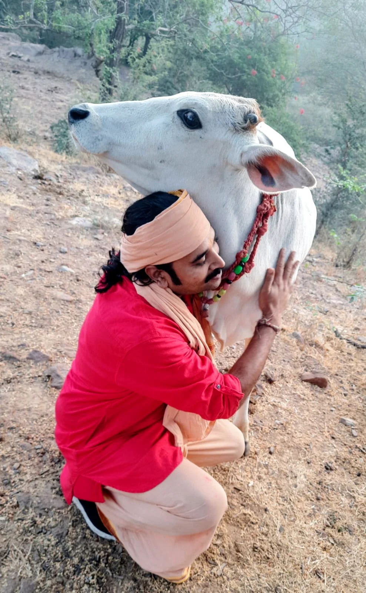

Seva
Service is not an occasional act. It is a daily discipline.
About the Pariwar
Shree Surbhi Kripa Pariwar is not an organisation you join with a form. It is a family you become part of by showing up with love.


Our Story
What if our devotion could be measured not by what we say, but by what we do for the most gentle among us?
That question lives at the heart of Shree Surbhi Kripa Pariwar. What began as a personal commitment to care for Gau Mata has grown into a pariwar of devotees, families, young seekers, and neighbours who come together to feed, protect, and honour cows and calves in and around Gurugram.
We are not large. We are not loud. We are simply present — every day — with fodder, water, medicine, and hands that are willing to help.
सेवा वही, जो हृदय से हो।Service that comes from the heart.

Our Guide
Acharya Ji's life is a living explanation of his message. He teaches that Gau Seva is not charity; it is a relationship. The cow gives without asking, and our duty is to give back with gratitude.
Under his guidance, the Pariwar organises daily Gau Seva, monthly havan and satsang, youth sanskar programmes, cleanliness drives, and community support. His approach is simple and demanding: serve with your own hands, give with humility, and never turn devotion into a performance.
गाय हमारी संस्कृति, सनातन हमारे प्राण।“The cow is our culture; Sanatan is our life-breath.” — Gopremi Acharya Manish Hari Ji
What We Believe
Service is not an occasional act. It is a daily discipline.
Compassion is the test of every tradition.
We carry our culture forward by living it, not just by quoting it.
We would rather do a small thing honestly than a big thing loudly.
Our Philosophy
The whole earth is one family. Everything we do begins here.
Before we speak of seva, we remember why we serve. Our tradition does not ask us to choose between devotion and compassion; it asks us to see the Divine in every living being — the cow, the tree, the stranger, and the earth itself.
Vedic prayer · Traditional
ॐ सर्वे भवन्तु सुखिनः
सर्वे सन्तु निरामयाः।
सर्वे भद्राणि पश्यन्तु
मा कश्चिद्दुःखभाग्भवेत्॥
Om sarve bhavantu sukhinaḥ, sarve santu nirāmayāḥ. Sarve bhadrāṇi paśyantu, mā kaścid duḥkha-bhāg bhavet.
May all be happy. May all be free from illness. May all see what is auspicious. May no one be touched by sorrow.
Maha Upanishad
अयं बन्धुरयं नेति
गणना लघुचेतसाम्।
उदारचरितानां तु
वसुधैव कुटुम्बकम्॥
Ayaṃ bandhur ayaṃ neti, gaṇanā laghu-cetasām. Udāra-caritānāṃ tu, vasudhaiva kuṭumbakam.
“This one is mine, that one is a stranger” — so count only the small-hearted. For those who live generously, the whole earth is one family.
Our Journey
Exact years and figures will be added once verified by the Pariwar.
A personal resolve to care for Gau Mata, one day at a time.
Devotees, families and neighbours join in daily seva.
Monthly havan and spiritual gatherings begin.
Sanskar programmes, cleanliness drives and local partnerships.
A growing family, serving in Gurugram and beyond.
In the Press
गाय हमारी संस्कृति, सनातन हमारे प्राण।
Hindi daily · Haryana
गोसेवा राष्ट्र सेवा का सर्वश्रेष्ठ माध्यम।
Hindi daily · Delhi
जन्म-जन्म का नाता है, गाय हमारी माता है।
Hindi daily · Haryana
Join the Pariwar
Whether you have an hour, a skill, or a prayer to offer, you are welcome.